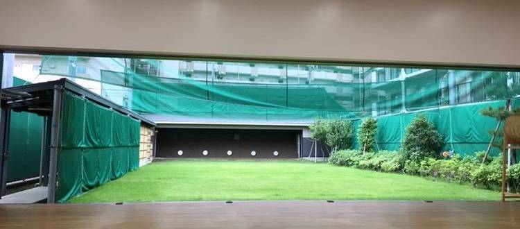

東品川公園弓道場

- 道場名：東品川公園弓道場
- 最寄駅：新馬場駅（東京都）
- アクセス：新馬場駅から徒歩7分
弓術研究会では、余裕がある大学生らしい日々と、弓を引ける生活を送れます。
大学生らしいといっても、弓をしっかり引くメンバーが多いです。イベントも盛り上がります。
弓術研究会で弓への思い出を、さらに忘れられないものにしましょう！
月に3・4回、品川の弓道場で弓を引いています。また、鍋パーティなどイベントも楽しんでいます！新設のサークルなので、これからイベントなど増えていきます！メンバーみんなで、工夫を凝らして、活動しています。
練習場所は以下の通りです。
※練習予定に関しましては、こちらをご覧ください。